1092A10 CRANKSHAFT SERVICES PULLEY - R.R.
- Path
- Procedures > 10 ENGINE UNIT > 1092 VARIOUS ENGINE COMPONENT CONTROLS > 1092A CRANKSHAFT PULLEY AND IDLE PULLEYS > 1092A10 CRANKSHAFT SERVICES PULLEY - R.R.
- Kind
- repair procedure (removal / refitting; the operation number is the code)
- Applies to
- all engines; all production periods
- Interactive page
- https://sloeber94.github.io/elrnDB-aGt/en/#/125001195
Applies to: engines: 2.0 JTS; all production periods
 Removing
Removing
 Refitting
RefittingPosition the vehicle on a lift.
Proceed with the removal
Op. 1016A40 IGNITION COIL COVER ON CYLINDER HEAD- R+R.
1. Undo the bolts (1a) and the nut (1b) and remove the engine components single drive belt guard (1c).
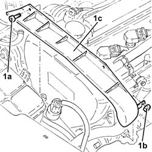
Applies to: engines: 2.0 JTS; all production periods
Proceed with the removal
Op. 4450B04 RIGHT FRONT WHEEL R R.
Proceed with the removal
Op. 7055B66 ENGINE COMPARTMENT DUST SHIELD PROTECTION IN RIGHT FRONT WHEEL ARCH - R.R..
Proceed with the removal
Op. 7055B54 UNDER-ENGINE GUARD - R R.
1. Adjust the mobile tensioner (1a) with a wrench and remove the engine components single drive belt (1b).
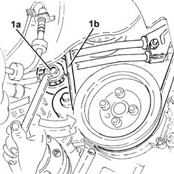
Applies to: engines: 2.0 JTS; all production periods
1. Undo the bolts (1a) and remove the guard (1b).
2. Fit the flywheel lock.
Description | Code | |
|---|---|---|
2 | Counter-torque | 1.860.898.000 |
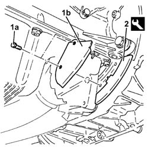
Applies to: engines: 2.0 JTS; all production periods
1. Undo the bolts (1a) and remove the crankshaft pulley (1b).
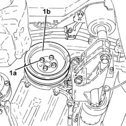
Applies to: engines: 2.0 JTS; all production periods
Refitting
Removing1. Position the crankshaft pulley (1a) in its housing and secure it tightening the bolts (1b) to the recommended torque.
Fastening | Component | Ø | Value (daNm) | |
|---|---|---|---|---|
1b | Bolt | CRANKSHAFT PULLEY | M8 | 2.3 ÷ 2.8 |
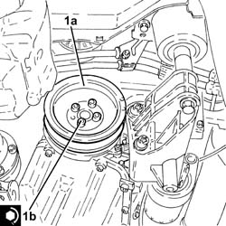
Applies to: engines: 2.0 JTS; all production periods
Remove the flywheel lock.
Description | Code | |
|---|---|---|
- | Counter-torque | 1.860.898.000 |
Place the guard back in its housing and secure it using the bolts.
Use a spanner in an anti-clockwise direction on the moving tensioner and fit the engine components single drive belt.
Proceed with the refitting
Op. 7055B54 UNDER-ENGINE GUARD - R R.
Proceed with the refitting
Op. 7055B66 ENGINE COMPARTMENT DUST SHIELD PROTECTION IN RIGHT FRONT WHEEL ARCH - R.R..
Proceed with the refitting
Op. 4450B04 RIGHT FRONT WHEEL R R.
Place the engine components single drive belt guard in position and secure it using the nut and the bolts.
Proceed with the refitting
Op. 1016A40 IGNITION COIL COVER ON CYLINDER HEAD- R+R.
Remove the vehicle from the lift.
Applies to: engines: 3.2 V6; all production periods
Removing
RefittingPosition the vehicle on a lift.
Proceed with the removal
Op. 4450B08 RIGHT REAR WHEEL R R.
Proceed with the removal
Op. 7055B64 LH OR RH REFLECTOR(ONE) ON REAR BUMPERS - R R.
Proceed with the removal
Op. 1092G10 SINGLE ENGINE BELT R R.
1. Fit the crankshaft pulley counter-torque tool.
Description | Code | |
|---|---|---|
1 | Counter-torque for crankshaft | 1.870.646.000 |
2. Loosen the nut for the crankshaft pulley.
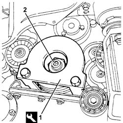
Applies to: engines: 3.2 V6; all production periods
Remove the crankshaft pulley counter-torque tool.
1. Completely undo the nut (1a) and remove the crankshaft pulley (1b).
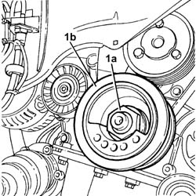
Applies to: engines: 3.2 V6; all production periods
Refitting
RemovingPosition the pulley on the crankshaft and secure it without tightening the nut.
1. Fit the crankshaft pulley counter-torque tool.
Description | Code | |
|---|---|---|
1 | Counter-torque for crankshaft | 1.870.646.000 |
2. Tighten the nut fixing the crankshaft pulley to the recommended torque.
Fastening | Component | Ø | Value (daNm) | |
|---|---|---|---|---|
2 | Left nut | CRANKSHAFT PULLEY | M28 | (Crankshaft side) 22.8 - 25.2 |
Remove the crankshaft pulley counter-torque tool.
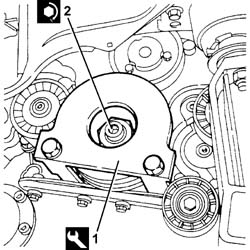
Applies to: engines: 3.2 V6; all production periods
Proceed with the refitting
Op. 1092G10 SINGLE ENGINE BELT R R.
Proceed with the refitting
Op. 7055B64 LH OR RH REFLECTOR(ONE) ON REAR BUMPERS - R R.
Proceed with the refitting
Op. 4450B08 RIGHT REAR WHEEL R R.
Remove the vehicle from the lift.
Applies to: engines: 1.9 JTD 16V; all production periods
Removing
RefittingPosition the vehicle on a lift.
Proceed with the removal
Op. 4450B04 RIGHT FRONT WHEEL R R.
Proceed with the removal
Op. 7055B54 UNDER-ENGINE GUARD - R R.
Proceed with the removal
Op. 7055B91 RIGHT FRONT WHEEL ARCH LINER - R.R..
Proceed with the removal
Op. 1092G10 SINGLE ENGINE BELT R R.
1. Undo the bolts (1a) and remove the crankshaft pulley (1b).
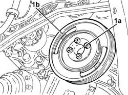
Applies to: engines: 1.9 JTD 16V; all production periods
Refitting
Removing1. Position the crankshaft pulley (1a) in its housing and secure it tightening the bolts (1b) to the recommended torque.
Fastening | Component | Ø | Value (daNm) | |
|---|---|---|---|---|
1b | Bolt | CRANKSHAFT PULLEY | M8 | 2.3 ÷ 2.8 |
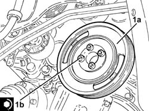
Applies to: engines: 1.9 JTD 16V; all production periods
Proceed with the refitting
Op. 1092G10 SINGLE ENGINE BELT R R.
Proceed with the refitting
Op. 7055B91 RIGHT FRONT WHEEL ARCH LINER - R.R..
Proceed with the refitting
Op. 7055B54 UNDER-ENGINE GUARD - R R.
Proceed with the refitting
Op. 4450B04 RIGHT FRONT WHEEL R R.
Remove the vehicle from the lift.
Applies to: engines: 1.8 T.SPARK; all production periods
Removing
RefittingPosition the vehicle on a lift.
Op. 4450B04 RIGHT FRONT WHEEL R R
Op. 7055B66 ENGINE COMPARTMENT DUST SHIELD PROTECTION IN RIGHT FRONT WHEEL ARCH - R.R.
Op. 1092G10 SINGLE ENGINE BELT R R
1. Undo the bolts (1a) and remove the crankshaft pulley (1b).
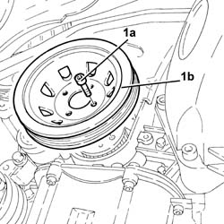
Applies to: engines: 1.8 T.SPARK; all production periods
Refitting
RemovingPosition the crankshaft pulley in its housing and secure it tightening the bolts to the recommended torque.
Fastening | Component | Ø | Value (daNm) | |
|---|---|---|---|---|
- | Bolt | CRANKSHAFT PULLEY | M8 | 2.3 - 2.8, daNm |
Op. 1092G10 SINGLE ENGINE BELT R R
Op. 7055B66 ENGINE COMPARTMENT DUST SHIELD PROTECTION IN RIGHT FRONT WHEEL ARCH - R.R.
Op. 4450B04 RIGHT FRONT WHEEL R R
Remove the vehicle from the lift.
Topics linked from this page (8)
- 1016A40 IGNITION COIL COVER ON CYLINDER HEAD- R+R
- 1092G10 SINGLE ENGINE BELT R R
- 4450B04 RIGHT FRONT WHEEL R R
- 4450B08 RIGHT REAR WHEEL R R
- 7055B54 UNDER-ENGINE GUARD - R R
- 7055B64 LH OR RH REFLECTOR(ONE) ON REAR BUMPERS - R R
- 7055B66 ENGINE COMPARTMENT DUST SHIELD PROTECTION IN RIGHT FRONT WHEEL ARCH - R.R.
- 7055B91 RIGHT FRONT WHEEL ARCH LINER - R.R.
Topics that link to this page (37)
- 1008A46 CAM SHAFT LEFT RIGID MOUNT - R R
- 1008C14 ENGINE LINK BRACKET - R R
- 1008C18 LINK MOUNT ON ENGINE - R R
- 1016C10 SINGLE CYLINDER HEAD, REMOVED - OVERHAUL
- 1016D20 LEFT CYLINDER HEAD – R.R. AND REPLACING GASKET
- 1016D24 RIGHT CYLINDER HEAD - R.R. AND GASKET REPLACING
- 1020A20 CRANK CASE OIL SUMP - R + R CLEAN SEALS FOR SEALANT APPLICATION
- 1020D12 FRONT CRANK SHAFT OIL SEAL COVER - R + R AND REPLACE SEALS
- 1020D14 FRONT CRANK SHAFT OIL SEAL COVER - R + R AND REPLACE SEALS FOR VERSIONS WITH OIL PUMP ON CRANK SHAFT, TIMING SIDE
- 1020D15 FRONT CRANKSHAFT OIL SEAL COVER-R+R AND REPLACE SEALS FOR ENGINES WITH OIL PUMP ON CRANKSHAFT AND HEAT EXCHANGER
- 1020D18 FRONT CRANK SHAFT COVER OIL SEAL - REPLACE
- 1028H10 PISTON WITH CONNECTING ROD - R R
- 1032B10 TOOTHED TIMING BELT - R + R FOR TIMING ADJUSTMENT OR REPLACEMENT
- 1032B46 TOOTHED DRIVE PULLEY - R + R
- 1032B52 TOOTHED DRIVEN PULLEY (ONE) - R + R
- 1032B54 LEFT CYLINDER HEAD DRIVEN TOOTHED PULLEYS - R.R.
- 1032B58 RIGHT CYLINDER HEAD DRIVEN TOOTHED PULLEYS - R.R.
- 1032C18 MOBILE TIMING SYSTEM TENSIONER - R + R FOR 24 VALVE ENGINES
- 1032C32 FIXED TIMING SYSTEM TENSIONER (ONE) R + R
- 1032D12 TIMING SYSTEM PROTECTIVE COVER(S) - R + R
- 1036C10 CAMSHAFT IN CYLINDER HEAD - R R ON VEHICLE
- 1036E10 LEFT CYLINDER HEAD TIMING SYSTEM SHAFTS - R.R. ON CAR
- 1036E14 RIGHT CYLINDER HEAD TIMING SYSTEM SHAFTS - R.R. ON CAR
- 1036E18 <x>RH&LH CYLINDER HEAD TIMING SYSTEM SHAFTS -R.R. ON CAR </x>
- 1036E50 FRONT OIL SEALS OF L/H OR R/H OVERHEAD CAMSHAFT - REPLACE
- 1036E54 FRONT OIL SEALS OF L/H OVERHEAD CAMSHAFT - REPLACE
- 1036E58 FRONT OIL SEAL OF R/H OVERHEAD CAMSHAFTS - REPLACE
- 1036L10 CAMSHAFTS IN CYLINDER HEAD EXTENSION - R R - INCLUDES CYLINDER HEAD EXTENSION REPLACEMENT IF NECESSARY
- 1036L30 FRONT OIL SEAL OF INTAKE CAMSHAFT IN CYLINDER HEAD EXTENSION REPLACE
- 1056B51 CAM ANGLE SENSOR R + R
- 1060E10 PRESSURE PUMP - R R
- 1060E30 PRESSURE PUMP PULLEY - R R
- 1060E40 SUPPLEMENTARY PRESSURE PUMP - R R
- 1072B10 INLET MANIFOLD - R + R AND REPLACE SEAL
- 1084B23 OIL PUMP CONTROL RETURN - R R
- 1088C10 WATER PUMP - R + R
- 4130B32 POWER STEERING PUMP MOUNT - R R